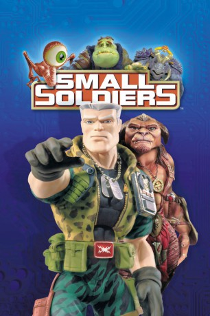

#1915 Small Soldiers
 
 IMDB-Wertung: 6.1 / 10
IMDB-Wertung: 6.1 / 10  Metascore: 0
Metascore: 0 
Action, absolute Hochspannung, unschlagbare Power: Das sind die Small Soldiers Spielfiguren! Sie sollten mit ihren Militärchipcomputergehirnen den Actionfigur-Markt revolutionieren - auf Spielzüge reagieren, handeln, 'zurückspielen'. Keiner konnte ahnen, daß zwischen den friedlichen Gorgonites und den Commando-Elite-Figuren ein Krieg ausbricht, der die halbe Stadt ins Chaos stürzt ...
Jahr: 1998
Dauer: 110 Minuten
FSK: 12
Land: USA Studio: DreamWorks DistributionTonspuren: DTS - ,
Untertitel: Deutsch,
Auflösung: 1080p (1920x816) Größe: 8120 MB
Genre: Action, Abenteuer, Komödie, Fantasy, Sci-Fi
Regisseur: Joe Dante
Drehbuch: Gavin Scott, Adam Rifkin, Ted Elliott, Terry Rossio
Soundtrack: Jerry Goldsmith
Darsteller:
Datei: X:\1998\Small Soldiers (1998, FSK12, 1920x816).mkv seit 01.09.2015
Festplatte: HD 1996-2002
 Es gibt insgesamt 86 Filme in der Gruppe '1998'
Es gibt insgesamt 86 Filme in der Gruppe '1998'